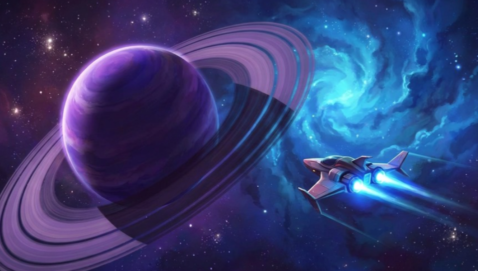

Mouse on the picture = front touch (click = tap, Shift+click = two-finger tap). Hold Q+E+Z (L + R + Select) for 0.5 s toggles the panel. Mouse down on the two buttons or the panel's Close is swallowed: no dot, no click.

Input testwhat is sent
FRONT TOUCH · 1920 x 942
touch the screen
Click0Hold-
MOTION · raw Vita vs as sent
raw
sent
LRSELECThold to close
Input test
tap: resync
What this is
Issue #458. Debug-tools builds only (VITARPS5_DEBUG_TOOLS). Everything is drawn over the live video, on the stream overlay layer, after the resync widget, so it sits on top of the game. Data is illustrative. The panel shows what VitaRPS5 sends, not what the console receives.
Layout (960 x 544)
Input test button: 120 x 26, PANEL fill, R_SM, T16, left of the resync widget with a 6 px gap (x 638, y 512). Shows a green dot when the panel is open. The visible box stays 26 high like the resync widget; the touch box is taller (see below).
Panel: docked to the left edge, x 8, y 8, 384 x 528, R_MD, PANEL token (92%, no new alpha). The right 576 px of the picture stay clear. The top-right hint pill and stats panel and the bottom-right widgets are not covered.
Touch: a 232 x 114 pad (same ratio as 1920 x 942), thirds grid, finger 1 white dot, finger 2 accent dot, 16 px. The right column prints each finger's sent x y. A lifted finger leaves a faint ring for 0.4 s. The pad border turns green while a click is held.
Click: light (24 px), counter, measured hold of the last click, and a verdict: green when 40 to 70 ms, amber outside it, "-" before the first click. The light stays lit at least 250 ms so a 50 ms click can be seen at 60 fps.
Motion: two horizon boxes, "raw" and "sent", so a wrong axis frame shows as the two disagreeing. One tilt form only: each is a box with one tilted line (roll) offset by pitch (clamped), so it costs two lines and no clipping on vita2d. The sent horizon is read as a DualSense frame (gravity on +y when flat), the raw one as a Vita frame, so today's copy-as-is shows pitch +90 on a flat table. A WARN line says when sent and raw tilt differ by more than 5 degrees (the #455 symptom). Raw and sent columns are told apart by position and by ACCENT on sent. Below, one table: accel (G) and gyro (rad/s), x y z, raw and sent side by side, signed, 2 decimals for accel and 3 for gyro. The raw vs sent table is T16 on 24 px rows. Numbers rebuild at 10 Hz so they can be read; dots and the light update every frame.
Type: T20 title, T16 labels, T14 numbers (Roboto digits are equal width; the footer uses T14 text, not 11 px glyph art). Colours: OK green light and "in range", WARN amber out of range, ACCENT second finger. No new tokens.
Input
Open: tap the Input test button, or hold L + R + Select for 0.5 s (same style as the exit combo L + R + Start). While the combo is held, those three buttons are swallowed from the game, so Select does not fire Share on the console; the Input test button's long-press hint and the debug design doc state the combo. Open question for the CEO. Both widgets get the same invisible 48 px touch box.
Close: the Close pill (48 x 48 hit box), the Input test button, or the same L + R + Select hold. Controller buttons cannot move focus around the panel on purpose, because they must keep going to the game; that is why the combo is the controller path. A progress bar in the footer fills while the combo is held.
Touches that must not reach the game: reuse the existing resync widget filter in host_input.c. The filter decides at touch-down: a touch that starts inside the Input test button, the resync button or the panel's Close pill is swallowed for its whole life (no touchpad event, no button mapping, no click), and a touch that starts anywhere else is sent as usual, even if it later slides across the panel. The panel body is not swallowed, so the CEO can tap on the screen behind it and see the dots. The same rect-helper (debug_widget_contains_screen_point) is used by the drawer and the filter, so the drawn controls and the swallowed areas cannot disagree. The panel exposes only the two button rects, not its whole area.
A swallowed touch never appears as a dot, because the pad shows only what is sent.
The panel hides itself with the other overlay widgets while reconnecting, on resync and at teardown, and starts closed on every new stream.